Forecasting the Gold and Bitcoin Price (R)
Quantitative trading, Time series analysis, Forecasting model, ARIMA model
Abstract
This project focuses on finding the best investment model for traders to predict gold and bitcoin price. Besides, I publish the article on IJISM, and I’m the first author.
We introduce the ARIMA model to predict the prices of gold and bitcoin in the next three days while considering the influence of time factors, and select some other prediction models to compare with the performance of the ARIMA model to explore our time series prediction method is good, which also shows that the model can be used as a reference investment model for traders.
Time-series analysis is a basic concept within the field of statistical-learning, which is appropriate for the analysis of the Gold and Bitcoin Price. And for this project we leverage the horse-power of RStudio and deliver.
We introduce the ARIMA model to predict the prices of gold and bitcoin in the next three days while considering the influence of time factors, and select some other prediction models to compare with the performance of the ARIMA model to explore our time series prediction method is good, which also shows that the model can be used as a reference investment model for traders.
Time-series analysis is a basic concept within the field of statistical-learning, which is appropriate for the analysis of the Gold and Bitcoin Price. And for this project we leverage the horse-power of RStudio and deliver.
Load Packages
This project has changed since its creation, for the current structure we include the additional packages inside the helper_functions script.
Along with the use of the packrat package as a version controller, which removes the need to manually install each package used in this project.
Within the helper_functions script we call library() method and include the package names as arguments.
Along with the use of the packrat package as a version controller, which removes the need to manually install each package used in this project.
Within the helper_functions script we call library() method and include the package names as arguments.
# LOAD YOUR PACKAGES
library(ggplot2)
library(forecast)
library(plotly)
library(ggfortify)
library(tseries)
library(gridExtra)
library(docstring)
library(readr)
Here Package
Utilizing the here package, the here() function will make the main directory accessible to easily navigate the project directory.
library(here)
here()
here()
We After cleaning the dataset to remove missing values and some outliers, we divide the dataset into training set and test set. The training set uses the daily gold settlement price in the United States from January 2, 2008 to May 16, 2018, a total of 2290 days, and the daily bitcoin settlement price data from April 28, 2013 to August 14, 2018 . The test set is valid from September 11, 2018 to September 10, 2021.encourage you to do a quick search on each of these packages to gain context on what they are useful for, and why we are using them here. Pay special attention to the packages forecast.
Get Data
After cleaning the dataset to remove missing values and some outliers, we divide the dataset into training set and test set. The training set uses the daily gold settlement price in the United States from January 2, 2008 to May 16, 2018, a total of 2290 days, and the daily bitcoin settlement price data from April 28, 2013 to August 14, 2018 . The test set is valid from September 11, 2018 to September 10, 2021.
Table. 1. Partial data display
Table. 1. Partial data display
Date |
Gold USD (PM) |
Date |
Bitcoin Value |
2008/1/17 |
1270.95 |
2013/4/16 |
762.97 |
2008/1/18 |
1219 |
2013/4/17 |
11584.83 |
2008/1/19 |
1406.8 |
2013/4/18 |
3961.493333 |
2008/2/17 |
1269.6 |
2013/4/19 |
7296.77 |
2008/2/18 |
1215.45 |
2013/4/20 |
19454.54 |
Furthermore, to remove the dimensional effect between prices, we normalize the data to account for comparability between data. We use today’s price divided by yesterday’s price instead of today’s price for subsequent forecasts.
Loading Data
Then we must include our data set within our working R environment. For this we use:
data_hj <- read.csv(here("data", "LBMA-GOLD.csv"))
# Within the github repo the file `BCHAIN-MKPRU`
# is inside the data folder
# Using `here` will notify R to go to:
# `C:/Users/86135/Documents/data/BCHAIN-MKPRU.csv`
Now we can call our Bitcoin Price data by typing data_hj$USD into our terminal.
# Within the github repo the file `BCHAIN-MKPRU`
# is inside the data folder
# Using `here` will notify R to go to:
# `C:/Users/86135/Documents/data/BCHAIN-MKPRU.csv`
Exploratory Analysis
Now we want to get a feel for our data to get an intuition about the models that may be appropriate for our forecast. For this, we plot our data and diagnose for trend, seasonality, heteroskedasticity, and stationarity. We go over these concepts in further detail in this section.
Creating time-series data object
Our data is in the form of time-series; this means that our data exists over a continuous time interval with equal spacing between every two consecutive measurements. In R we are able to create time-series objects for our data vectors using the ts() method. For this, we select the vector we would like to use as the first argument, and tune the start and freq (frequency) parameters. Then we output the time-series data to the terminal by calling our newly-created time-series object.
USD<- ts(data_hj$USD, start=c(2016, 10), freq=365)
Here we use our function called plot_time_series, which does as its name suggests: plot.ts(USD)
Before we begin any analysis, we will be splitting the data to remove 2015 to use as our test set. 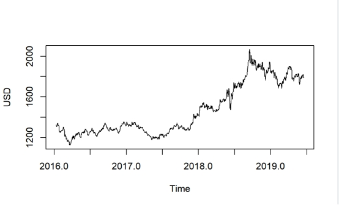
Value_training <- ts(USD, start=c(2016, 10), end=c(2021, 5), freq=365)
length(Value_training )
Value_training
plot.ts(Value_training)
length(Value_training )
Value_training
plot.ts(Value_training)
Terminal Output
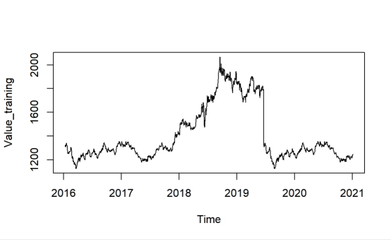
Plotting our Time Series
Plotting the data is arguably the most critical step in the exploratory analysis phase (We chose to emphasize on the time series object that has intervals from 2016 to 2021 , which we will explain later!). This enables us to make inferences about important components of the time-series data, such as trend, seasonality, heteroskedasticity, and stationarity. Here is a quick summary of each:
- Trend: we say that a dataset has a trend when it has either a long-term increase or decrease.
- Seasonality: we say that a dataset has seasonality when it has patterns that repeat over known, fixed periods of time (e.g. monthly, quarterly, yearly).
- Heteroskedasticity: we say that a data is heteroskedastic when its variability is not constant (i.e. its variance increases or decreases as a function of the explanatory variable).
- Stationarity: a stochastic process is called stationary if the mean and variance are constant (i.e. their joint distribution does not change over time).
Testing for Stationarity
We will utilize a few statistical tests to test for stationarity. We must be weary of our model having a unit root, this will lead to non-stationary processes.
Box.test(Value_training,lag=20,type="Ljung-Box")
Terminal Output
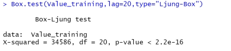
Now we will utilize the Augmented Dickey-Fuller Test for stationarity. The null hypothesis states that large p-values indicate non-stationarity and smaller p values indicate stationarity (We will be using 0.05 as our alpha value).
adf.test(Value_training)
adf.test(Value_training)
Terminal Output
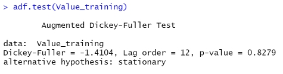
We can see our p-value for the ADF test is relatively high, so we'll do some further visual inspection. But we know we will most likely have to difference our time series for stationarity.Decomposing our time-series
Beyond understanding the trend of our time-series, we want to further understand the anatomy of our data. For this reason we break-down our time-series into its seasonal component, trend, and residuals.
plot(decompose(Value_training))
The trend line already shows us what we know and we can see that there might be some seasonality in our time series object. 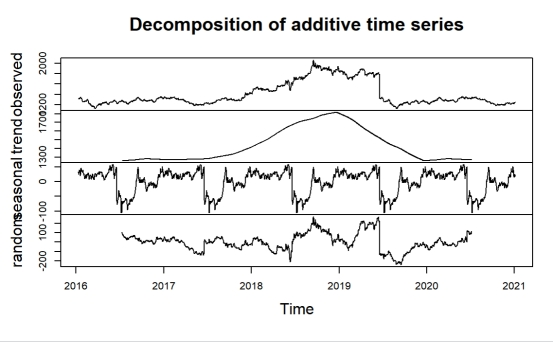
Seasonal Plot
We will investigate if there was enough seasonality to adjust our time series object for seasonality. The seasonal plot can provide a good visual of seasonality for time series objects. This can be best illustrated through a commonly used time series dataset: AirPassenger (which requires knowledge of stationary and heteroskadasicty to transform the data set appropriately).
But if you run the seasonal plot for this function, you can see it follows a certain season pattern. I provided the code right here but will not provide visuals since its not apart of this project. You can run it yourself to get a picture of what I'm saying
But if you run the seasonal plot for this function, you can see it follows a certain season pattern. I provided the code right here but will not provide visuals since its not apart of this project. You can run it yourself to get a picture of what I'm saying
Model Estimation
Diagnosing the ACF and PACF Plots of our Time-Series Object
ACF stands for "autocorrelation function" and PACF stands for "partial autocorrelation function". The ACF and PACF diagnosis is employed over a time-series to determine the order for which we are going to create our model using ARIMA modeling. Loosely speaking, a time-series is stationary when its mean, variance, and autocorrelation remain constant over time.
These functions help us understand the correlation component of different data points at different time lags. Lag refers to the time difference between one observation and a previous observation in a dataset. Let's examine our plots!
These functions help us understand the correlation component of different data points at different time lags. Lag refers to the time difference between one observation and a previous observation in a dataset. Let's examine our plots!
# DIAGNOSING ACF AND PACF PLOTS
pacf(Value_training)
pacf(Value_training)
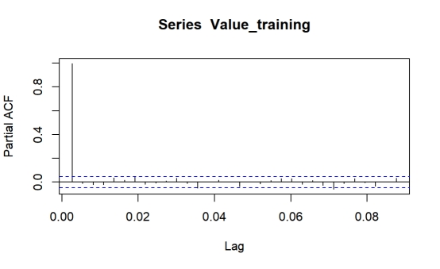
When there is large autocorrelation within our lagged values, we see geometric decay in our plots, which is a huge indicator that we will have to take the difference of our time series object.Transforming our data to adjust for non-stationary
From visual inspection of the time series object and the other graphs used for exploratory purposes we decided it is appropriate to difference our time series object to account for the non-stationarity and see how that fares!
A way to make a time-series stationary is to find the difference across its consecutive values. This helps stabilize the mean, thereby making the time-series object stationary.
For this we use the diff() method.
A way to make a time-series stationary is to find the difference across its consecutive values. This helps stabilize the mean, thereby making the time-series object stationary.
For this we use the diff() method.
tsDiff <- diff(Value_training)
Next we plot our transformed time-series. plot.ts(tsDiff)
This plot suggests that our working data is stationary. We want to confirm this running an ACF and PACF diagnostics over this data to find our if we can proceed to estimating a model. 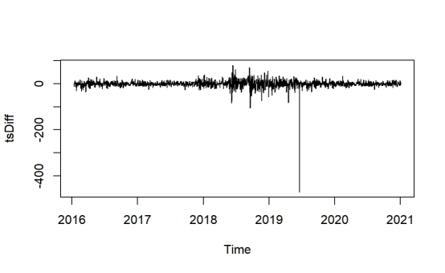
Testing for Stationarity
We apply the same tests to our differenced time series object.
Box.test(tsDiff, lag = 20, type = "Ljung-Box")
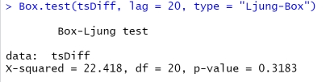
Now let's use the ADF Testadf.test(tsDiff)
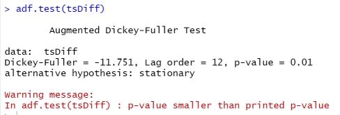
Upon reading this stackoverflow post over the cryptic warning message, we can see that the result yields a small p-value which makes us reject the null suggestion stationarity.Seasonal Plot for Transformed Time Series Object
Now that we have a stationary time series object, we again make a seasonal plot which this time shows us that there is no indicative visual seasonal pattern provided by the following code:
plot_seasonal(tsDiff, 'First Difference of S&P 500')
Just to reiterate, this plot shows us there is no clear seasonal pattern. Therefore, we can continue and assume that our differenced time series object meets the criteria for the Box-Jenkins model estimation.
Build Model
Our findings in the exploratory analysis phase suggest that model ARIMA(0, 1, 1) might be best fit. Fortunately, there is a function in R that we can use to test our findings.
The auto.arima() method, found within the forecast package, yields the best model for a time-series based on Akaike-Information-Criterion (AIC). The AIC is a measurement of quality used across various models to find the best fit. After running our original and differenced data sets through the auto.arima() method we confirmed that the ARIMA(0, 1, 1) is our best fit model.
We use the Arima() method to fit our model and include our training data set sp500_TR as the first argument.
The auto.arima() method, found within the forecast package, yields the best model for a time-series based on Akaike-Information-Criterion (AIC). The AIC is a measurement of quality used across various models to find the best fit. After running our original and differenced data sets through the auto.arima() method we confirmed that the ARIMA(0, 1, 1) is our best fit model.
We use the Arima() method to fit our model and include our training data set sp500_TR as the first argument.
fit <- Arima(Value_training, order = c(0,1,2), include.drift = TRUE)
summary(fit)
Here's the summary of our model (using the summary() method): summary(fit)
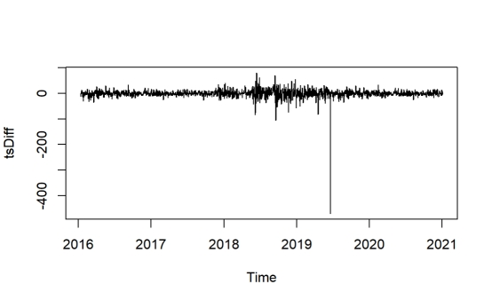
Terminal Output
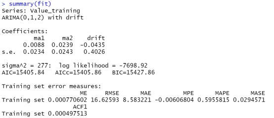
Forecasting
We proceed to forecasting now that we believe we found the appropriate model!
We utilized the autoplot() function quite heavily on this iteration of our project, since we couldn't find a way of adding the actual values to the plot we used a workaround by borrowing Drew Schmidt's work to include the actual 2015 values.
UPDATE: For the current iteration on inertia7, we decided to iteratively update the test set, so for this demonstration we included 2015-2017. In the shiny dashboard we only included the original forecast range (only 2015).
For this we downloaded data for 2015-2017 and created our test set accordingly.
We utilized the autoplot() function quite heavily on this iteration of our project, since we couldn't find a way of adding the actual values to the plot we used a workaround by borrowing Drew Schmidt's work to include the actual 2015 values.
UPDATE: For the current iteration on inertia7, we decided to iteratively update the test set, so for this demonstration we included 2015-2017. In the shiny dashboard we only included the original forecast range (only 2015).
For this we downloaded data for 2015-2017 and created our test set accordingly.
sp500_TR= ts(Value_training)
sp500_test <- read.csv("C:/Users/86135/Documents/data/LBMA-GOLD.csv")
sp500_test <- ts(sp500_test$USD,
start = c(2021,6), end=c(2021,9),
frequency = 365)
sp500_test<-c(52677.4000,46809.1700,46078.3800,46368.6900 )
Next we use the forecast function, ggplot2 and plotly to visualize the predictions for the year 2015! Here within the plots the forecasted values are BLUE, the actual 2015 values are in RED, the 80% Confidence Intervals are encompassed in the YELLOW bands and 95% Confidence Intervals are encompassed in the ORANGE bands respectively. sp500_test <- read.csv("C:/Users/86135/Documents/data/LBMA-GOLD.csv")
sp500_test <- ts(sp500_test$USD,
start = c(2021,6), end=c(2021,9),
frequency = 365)
sp500_test<-c(52677.4000,46809.1700,46078.3800,46368.6900 )
for_sp500_all <- forecast(fit, h = 4)
fore<-forecast::forecast(fit,h=4)
fore
plot(fore,lty=2)
lines(fore$fitted,col=2)
fore<-forecast::forecast(fit,h=4)
fore
plot(fore,lty=2)
lines(fore$fitted,col=2)
We can see that the model performs well and within the 80% and 95% confidence intervals. You can forecast values even further into the future by tuning the appropriate parameters. Please not that this forecast project is for educational purposes and we do not recommend investing by using these predictions - remember that the stock market is very volatile.
We conclude that the ARIMA models performs best given that it's still inside the 95% prediction intervals and the accuracy metrics performed better than all other models.
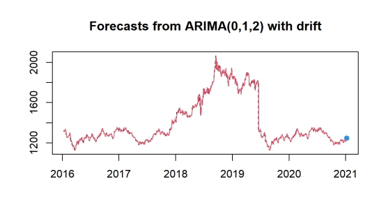
Other Forecasting Methods
So in this more interactive iteration of our project we included other forecasting methods to show the versatility of forecasting methods and to use as comparisons!
Box-Cox Forecast
Box-Cox transformations are generally used to transform non-normally distributed data to become approximately normal! Although we do not think this an appropriate transformation for our data set, it is still included in our analysis because it's a useful transformation to do especially since most real time data is not approximately normally distributed.
lambda <- BoxCox.lambda(sp500_TR)
fit_sp500_BC <- ar(BoxCox(sp500_TR,lambda))
fit_BC <- forecast(fit_sp500_BC,h=4,lambda=lambda)
Now that we have created the forecast object we plot the prediction! fit_sp500_BC <- ar(BoxCox(sp500_TR,lambda))
fit_BC <- forecast(fit_sp500_BC,h=4,lambda=lambda)
autoplot(fit_BC,
holdout = sp500_test,
forc_name = 'Box-Cox Transformation',
ts_object_name = 'S&P 500')
The prediction shows a downward trend whereas the actual values show upward trend.holdout = sp500_test,
forc_name = 'Box-Cox Transformation',
ts_object_name = 'S&P 500')
Exponential Smoothing Forecast
The following forecasting method is far more complex than the previous methods. This forecasting method relies on weighted averages of past observations where the most recent observations hold higher weight! Fortunately for us if we usethe ets function it outputs the method that best fits (much like the auto.arima() function)
For those interested when outputting the summary for the ets model we receive that our model is ETS(A, Ad, N) which reading more of Hyndman's blog we see that it is equivalent to an ARIMA(1, 1, 2) interesting to know.
For those interested when outputting the summary for the ets model we receive that our model is ETS(A, Ad, N) which reading more of Hyndman's blog we see that it is equivalent to an ARIMA(1, 1, 2) interesting to know.
fit_ets <- forecast(ets(Value_training), h = 4)
autoplot(fit_ets,
holdout=sp500_test,
forc_name = 'Exponential Smoothing',
ts_object_name = 'S&P 500')
Interesting that Exponential Smoothing's prediction is still within both prediction intervals, although the bands are noticeably larger than our ARIMA, it will be interesting to see more future predictions for this promising model. autoplot(fit_ets,
holdout=sp500_test,
forc_name = 'Exponential Smoothing',
ts_object_name = 'S&P 500')
Mean Forecast
For most of these forecasting methods they are best explained by Rob J. Hydnman (the man who created most of these time series packages) I will just be iterating what he has already said for simple forecasting methods found here.
The forecasting methods are useful to keep in mind because you might conclude that your time series object might not even require some complex algorithm. We begin with the average method; with the meanf() function we are essenntially forecasting values based upon the mean of the historical data!
The forecasting methods are useful to keep in mind because you might conclude that your time series object might not even require some complex algorithm. We begin with the average method; with the meanf() function we are essenntially forecasting values based upon the mean of the historical data!
fit_meanf <- meanf(Value_training, h = 4)
autoplot(fit_meanf,
holdout = sp500_test,
forc_name = 'Mean',
ts_object_name = 'S&P 500')
autoplot(fit_meanf,
holdout = sp500_test,
forc_name = 'Mean',
ts_object_name = 'S&P 500')
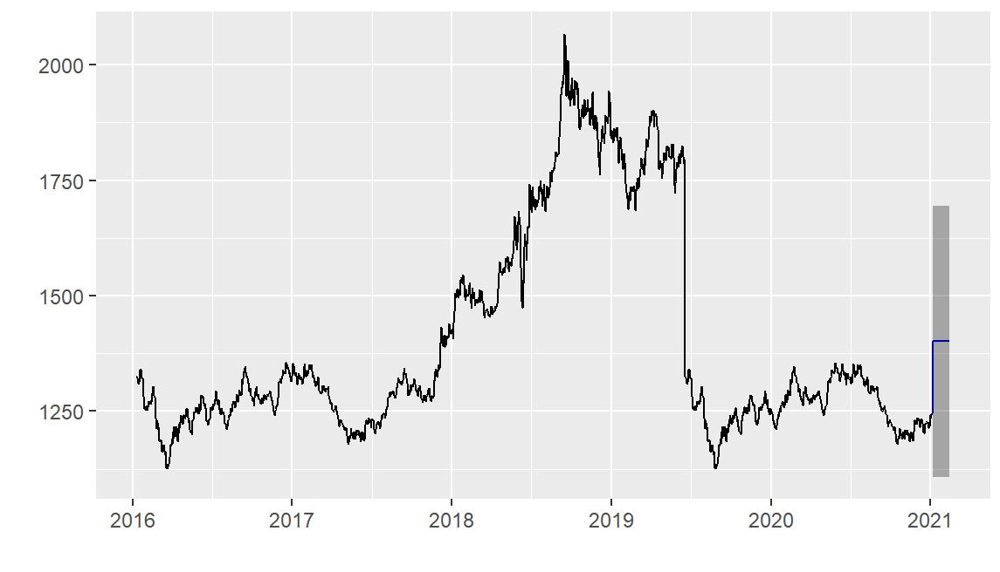
As we can see due to the non-stationarity and volatility of our data this model performs very poorly.Naive Forecast
The naive forecasting method returns an ARIMA(0, 1, 0) with random walk model that is applied to our time series object. Important to note that Hyndman described this forecasting method as being effective in financial time series objects, and that the forecasting method "... all ... values are set to be $$y_T$$, where $$y_T$$ is the last observed value"
fit_naive <- naive(Value_training, h = 4)
autoplot(fit_naive,
holdout = sp500_test,
forc_name = 'Naive Forecast',
ts_object_name = 'S&P 500')
autoplot(fit_naive,
holdout = sp500_test,
forc_name = 'Naive Forecast',
ts_object_name = 'S&P 500')
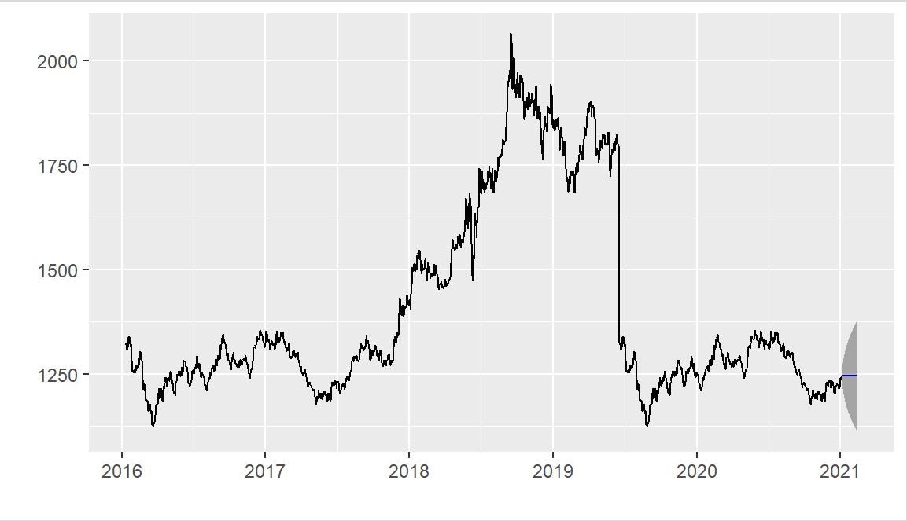
Seasonal Naive Forecast
For the snaive() method it follows the same principles as the naive method, but works better for very seasonal data!
fit_snaive <- snaive(Value_training, h = 4)
autoplot(fit_snaive,
holdout = sp500_test,
forc_name = 'Seasonal Naive',
ts_object_name = 'S&P 500')
autoplot(fit_snaive,
holdout = sp500_test,
forc_name = 'Seasonal Naive',
ts_object_name = 'S&P 500')
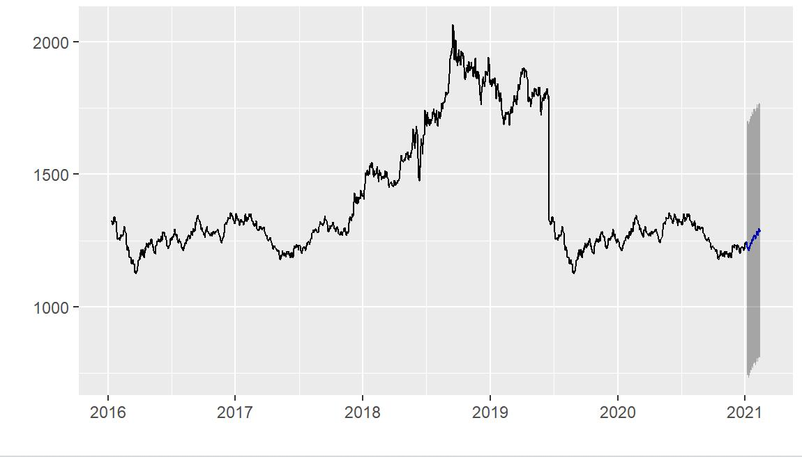
Neural Networks
For neural networks in the context of time series, each lagged value can be thought of as an input for the network (more specifically a feedforward neural network). Our model produced was a NNAR(2, 1, 2)12, which has 3 inputs including a seasonal input with 2 hidden layers. Important to note that models can sometimes be translated to ARIMA equivalents, but don't have restrictions on parameters to ensure stationarity (for more information see here).
Now we plot:
Now we plot:
fit_sp500_net <- nnetar(Value_training, lambda = lambda) # Using BC lambda
fit_net <- forecast(fit_sp500_net, h = 4, PI = TRUE)
autoplot(fit_net,
holdout = sp500_test,
forc_name = 'Neural Networks',
ts_object_name = 'S&P 500')
fit_net <- forecast(fit_sp500_net, h = 4, PI = TRUE)
autoplot(fit_net,
holdout = sp500_test,
forc_name = 'Neural Networks',
ts_object_name = 'S&P 500')
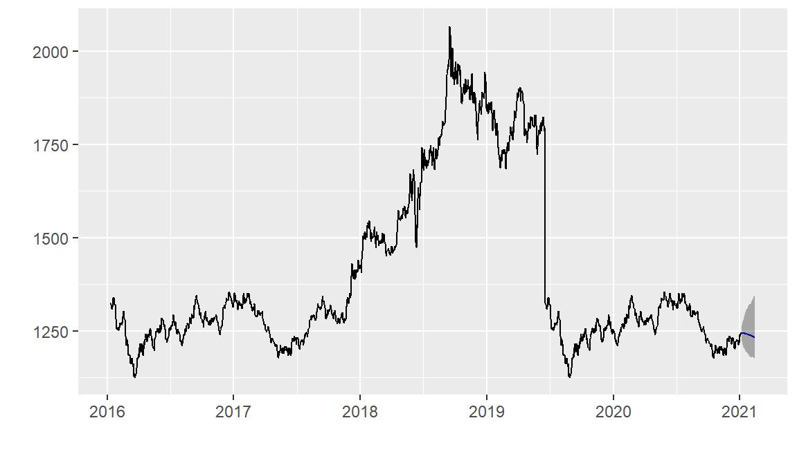
Conclusions
The forecasting method we use to find the best model is recieving the lowest MAE and MAPE as described by Rob J. Hyndman here
We run the accuracy function on all the forecast methods and we check which performed best!
We run the accuracy function on all the forecast methods and we check which performed best!
round(accuracy(fit_arima, sp500_test), 3)
round(accuracy(fit_BC, sp500_test), 3)
round(accuracy(fit_ets, sp500_test), 3)
round(accuracy(fit_meanf, sp500_test), 3)
round(accuracy(fit_naive, sp500_test), 3)
round(accuracy(fit_snaive, sp500_test), 3)
round(accuracy(fit_net, sp500_test), 3)
round(accuracy(fit_BC, sp500_test), 3)
round(accuracy(fit_ets, sp500_test), 3)
round(accuracy(fit_meanf, sp500_test), 3)
round(accuracy(fit_naive, sp500_test), 3)
round(accuracy(fit_snaive, sp500_test), 3)
round(accuracy(fit_net, sp500_test), 3)
Terminal Output
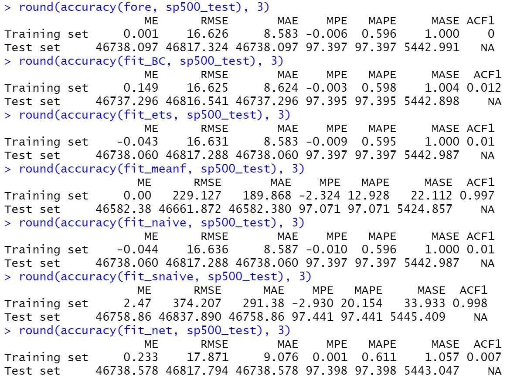
As we can see from our metrics relating to the 3 year test set, the ARIMA modeled performed better with Exponential Smoothing peforming well. Through the forecast plots however we saw that Exponential Smoothing is still within the prediction intervals, so its a close call.We conclude that the ARIMA models performs best given that it's still inside the 95% prediction intervals and the accuracy metrics performed better than all other models.
- Li Haohuo.Quantitative trading strategy design based on genetic programming algorithm [ D ].Shanghai Normal University, 2021.
- King. Short-term prediction of gold price based on ARIMA model [ J ]. Time Financial, 2016 ( 17 ) : 221-222.
- Duan Huan.Research on gold futures price prediction based on time series [ D ].Harbin University of Technology, 2021.
- Li Jing. Using BP neural network to build a bitcoin market forecasting model [ J ].Accounting Monthly, 2016 ( 21 ) : 33-36.
- [9]Xu Jingyi, Kong Mengqi. Research on the price of COMEX gold futures in New York based on ARIMA model [J].China, 2022(18):123-125.
- Mao Congqin.Gold price prediction analysis and mechanism research based on GARCH model [ D ].Suzhou University, 2016.
- Han Zhongming, Wang Yuhang, Mao Yajun, Chen Fuyu. Bitcoin trading prediction based on graph neural network [ J / OL ]. Computer application research : 1-8 [ 2022-10-27 ]. DOI : 10.19734.
- [4]Liu Chengjun, Yang Peng, Lv Wensheng, Huang Ping. Application of Grey-Markov Composite Model in Gold Price Forecasting [ J ].Nonferrous Metals ( Mining Part ), 2013,65 ( 01 ) : 7-11.